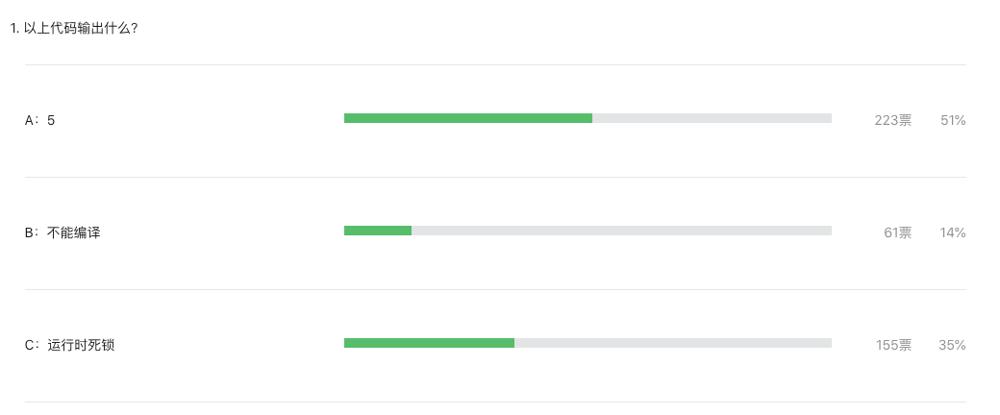

第 78 期周刊题目解析：答题正确率有点低
大家好，我是站长 polarisxu。
昨天在 Go语言爱好者周刊第 78 期 出了一道题，以下代码输出什么？
package main
import (
"fmt"
"time"
)
func main() {
ch1 := make(chan int)
go fmt.Println(<-ch1)
ch1 <- 5
time.Sleep(1 * time.Second)
}
A：5；B：编译不通过；C：运行时死锁
如果你没有做这道题，往下看之前，先思考下。
今天看了下答题结果，正确率有点低，才 35%：

可见不少人的基础还是不扎实。
此题如果改为这样：
package main
import (
"fmt"
"time"
)
func main() {
ch1 := make(chan int)
go func(){
fmt.Println(<-ch1)
}()
ch1 <- 5
time.Sleep(1 * time.Second)
}
结果就是 A 了。对比下你能知道原因了吧！
在 Go 语言规范中，关于 go 语句 有这么一句描述：
GoStmt = "go" Expression .The expression must be a function or method call; it cannot be parenthesized. Calls of built-in functions are restricted as for expression statements .
The function value and parameters are evaluated as usual in the calling goroutine, but unlike with a regular call, program execution does not wait for the invoked function to complete.
这里说明，go 语句后面的函数调用，其参数会先求值，这和普通的函数调用求值一样。在规范中调用部分 是这样描述的：
Given an expression
fof function typeF,f(a1, a2, … an)calls
fwith argumentsa1, a2, … an. Except for one special case, arguments must be single-valued expressions assignable to the parameter types ofFand are evaluated before the function is called.
大意思是说，函数调用之前，实参就被求值好了。
因此这道题目 go fmt.Println(<-ch1) 语句中的 <-ch1 是在 main goroutine 中求值的。这相当于一个无缓冲的 chan，发送和接收操作都在一个 goroutine 中（main goroutine）进行，因此造成死锁。
更进一步，大家可以通过汇编看看上面两种方式的不同。
此外，defer 语句也要注意。比如下面的做法是不对的：
defer recover()
而应该使用这样的方式：
defer func() {
recover()
}()